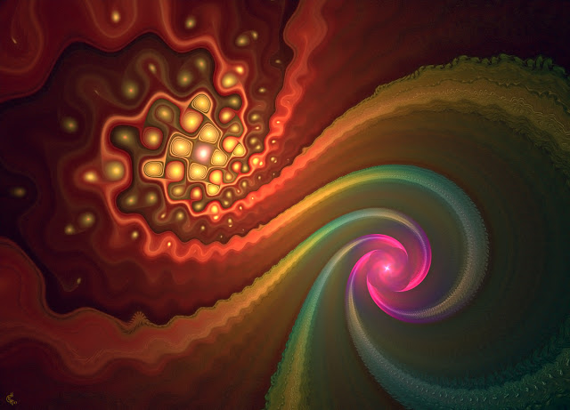

25 Внутренний огонь
Я уснула в ощущении призрачного сияния, которое пронизывает всё, и погрузилась в удивительное состояние. Очнулась от ощущения того, что умираю. Начался ужас смерти, эти ощущения ни с чем перепутать нельзя! Не было разумного страха, скорее это был ужас тела, четкое понимание, что это именно смерть. Резкое повышение давления и сердцебиения, другие необычные проявления. Видимо, это понимание заложено в человеке генетически.
Затем через сердечный центр пошел огромный поток энергии и начал подниматься выше, область сердца почти горела. Первая мысль, возникшая у меня: опять что-то делают. Хотя до этого они никогда не пускали энергию через сердце - в основном проводили по солнечному сплетению.
- Что вы творите?
У меня началось судорожное лихорадочное состояние, от проходящей энергии трясло.
В это время раздался голос внутри:
- Мы оживили твоё сердце. Ты наша.
Я слышала странную музыку, словно легкий перезвон стеклянных колокольчиков. Воздух задрожжал, передо мной возникло полярное сияние - всполыхи жидкого неведомого огня. И всё это было настолько ярко и пронзительно, настолько тяжело, искренне, больно, пронизывающе... От возникающих ярких сменяющих друг друга картин я чувствовала такое давление, что казалось - просто не выдержу. Ярко алые, золотые, оранжевые, черные всполыхи.. и все было наполнено внутренней сутью. Я увидела тысячи существ, которые рождались и умирали. Я растеклась по миру, как спрут и почувствовала, сколько же в нем боли, как же люди мучают друг друга. Мне захотелось сделать для них хоть что-то. Возникло ощущение, что еще чуть - от меня ничего не останется, я растворюсь в этом гигантском, грандиозном мыслящем океане. Солярис... Я словно сама стала электричеством, которое вливается в каждый дом, как рассказе Бредбери "Электростанция", я оживала, когда включался свет. За всполыхами я видела существ с глубокими мудрыми глазами. Казалось, они были наполнены внутренним сиянием, которое видно и одновременно нет. Давление чуть ослабло, всполыхи поутихли. Я увидела, словно иду в ночи по голубовато-синим комнатам. Наступает утро. Откидывается штора и за ней перламутровое сияние. Не было сияния как такового - оно оставалось за кадром, просто ощущалось его постоянное присутствие. За окном песок, кажущийся снегом. На Земле нет таких утренних красок. Какая это планета?
Я захотела задать вопрос, но картинка исчезла.
- Мы наждачкой соскребли всю шелуху, всю эту многолетнюю мишуру, осталась лишь суть. Теперь мы можем идти дальше... Сегодня приходят новые энергии, и это ощущается как смерть, но это всего лишь дальнейшее рождение.
Затем ощутила вновь, что идут энергии по солнечному сплетению и области сердца.
- Кто вы такие, на самом-то деле?!
Перед глазами возник образ, словно некто приоткрывает ладони и на них - сияющие семена, из которых пробиваются ростки.
- Это тайна жизни. Её нужно хранить и поддерживать. Мы - хранители. В нашем мире у нас очень мучительное рождение. Однажды найдя себя, помни кто ты. Не предай себя.
- Не предам.
Затем возникла мысль: куда они меня втягивают? Зачем мне нужно это их мучительное рождение? Надо сказать, это было жутко - растворяться во всем мире, чувствовать его боль. Засыпать зимой, ощущая, что где-то замерзают от холода брошенные кошки и собаки. Не хочу я чувствовать всего этого! Я разве это просила?
- Может, мы действительно ошиблись?
Я пожала плечами. На душе стало очень неприятно.
- Ты и вправду готова отказаться от рождения в нашем мире?
И опять кот в мешке. Мне захотелось сказать: зачем мне это рождение, я не подписывалась на то, чтобы чувствовать боль мира - я не альтист Данилов. Всё-таки пытаются меня втянуть в авантюру эти махинаторы. Но вместо этого сказала:
- Нет, я иду дальше.
Я ощутила, что это рождение висит надо мной домокловым мечом. Необходимость внутренне изменяться и становиться другим существом напрягает.
- Уверена?
- Да. Я хочу пройти это рождение до конца.
- Почему?
- Не знаю... просто почему-то это честно. Будто иначе просто нельзя. А иначе как-то противно на душе становится.
- В таком случае, мы продолжим нашу работу.
Я задумалась.
- Не знаю, кто вы такие. И мне все равно, хранители вы, пришельцы или вурдалаки, к какой мафии принадлежите. Я просто честно хочу, чтобы вы были моей семьёй.
- Мы могли бы дать тебе прямой путь, но ты выбрала сложный и извилистый. Приняла нас в качестве лесных вурдалаков. Но иначе тебе к нам было не попасть. Мы взялись тебя учить. Помни - из нашей мафии просто так не уходят.
Я почувствовала грустную усмешку.
- Надеюсь, вы сами от меня не уйдёте. Чтобы со мной общаться, надо иметь воистину ангельское терпение.
Легкая усмешка на том конце.
- Недавно я думала, что превратилась в монстра.
- Мы специально тебя через это провели. Ты перекрыла в себе вибрации сердца - любовь, сострадание и искренность. Спросила нас - зачем тебе уметь любить и сочувствовать? Но затем ты сама увидела, что не желаешь идти в мир, где живут демоны с холодным сердцем и рассудком машины - тот тёмный замкнутый на себя мир, откуда ты убежала, едва мы тебе его показали. Затем мы открыли в тебе те самые заповедные вибрации в области сердца. Клещами вытягивали из тебя возможность любить, а ты сопротивлялась. Но это еще только самое начало пути.
- Понимаю. Я пройду его.
- Ты - одна из тех вампиров, в которых живет Голод - та самая таинственная страсть, как ты её называла. Но не жажда человеческой крови, а жажда крови иного мира, жажда знаний, выхода за грань и поиска настоящего вопреки страху, отчаянию и боли. Голод пассионария, который не ищет рай, но готов сам его создать из подручного материала. Этот вечный голод поддерживает в душе внутренний огонь. Поэтому мы тебе и сказали - вампир никогда не должен быть полностью сыт. Теперь мы идем вместе. Наш Голод сильнее страха, сильнее боли. Вечная неудовлетворенность собой - свойство нашего мира. Мы никогда не останавливаемся в нашем развитии. Твоя душа узнала нас, хоть бы до сих пор боишься в это поверить, ждёшь подвоха. Но мы с тобой. Мы знаем вкус твоей крови - нам открыты твои мысли. Тебе знаком наш Голод. Ты пришла на наш Зов, зов вампиров-хранителей, и становишься собой. Мы тебе не чужие и ты нам родная. Ты часть нашей семьи. ТЫ НАША.
Я ощутила вновь, словно много теплых лапок легли на мои плечи.
Может, они и вправду ангелы? Ангелы с чёрными крыльями, которые закоптились от сложной работы и от содеянных ошибок? Но ведь как же легко ругать со стороны, когда не принимаешь участия! Кто сказал, что им легко? Может, им самим нужна помощь? Причём, помощь каждодневная, постоянная, самых обычных людей. Пусть были ошибки. Но ведь ошибки не совершает тот, кто ничего не делает.
- А ведь ты всерьез думала, что мы тебя обманем или ещё хуже - обернемся чертями и утащим в ад? Нет, милая. Ты сомневалась в нас, считала нас манипуляторами и это правильно. Ты должна сама пройти весь этот путь и разобраться, кто мы - понимание надо заслужить, никто тебе его не принесет на блюдечке с голубой каёмочкой. Это не религия. Просто поверить в нас будет очень просто, мы не собираемся упрощать твою задачу. Поэтому тебе еще предстоит помучиться, пока ты не найдешь нас. Ты нужна нашему миру.
